S1
Establish reliable correspondences
Robot demonstrations + curated human trajectories.
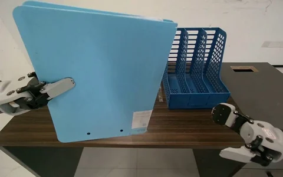
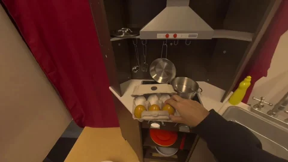
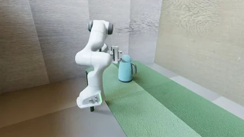
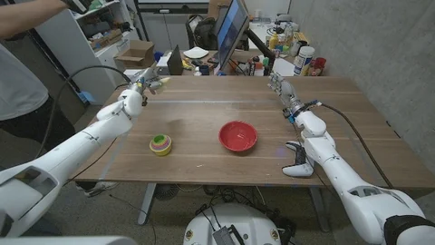
Joint flow pretraining
Checkpoint initializes the S2 student and EMA teacher.
Learning from human experience
Learn which actions to trust.
Learn from what happens next.
The idea
Egocentric videos bring diversity to robot learning. But tracking and retargeting can make their action labels unreliable.
EgoForesight learns from this imperfect data by regulating how much it trusts each source, while using demonstrated outcomes to teach action-relevant representations.
Pretraining experience
Real-world action MSE
RoboCasa few-shot success
Improvements over a matched baseline at 30k hours. Explore the scaling results
01 / How it works
Two complementary learning signals,
inside one joint vision–action flow.
Lower-reliability sources receive stronger action corruption. Future vision stays comparatively more informative.
An EMA teacher sees the current scene and the observed future. Its deeper action features supervise an earlier student layer, while the student receives a corrupted future.
Both branches receive the same corrupted action input. The teacher is updated by EMA; its feature targets have stopped gradients.
Observed future · training only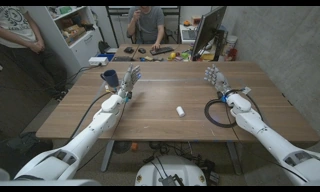
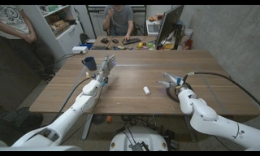
Schematic feature transfer. Image noise illustrates corruption in feature space.
Two coupled experts use current context to jointly denoise future visual features and a 30-step action chunk.
The heatmap shows the joint training distribution. Along the purple inference path, vision resolves earlier and informs the action stream through joint attention.
Deployment · current context onlyRegular training density; 2% clean-future boundary samples omitted.
Robot demonstrations + curated human trajectories.




Checkpoint initializes the S2 student and EMA teacher.
Retain S1 sources + 20,000 h of egocentric video.
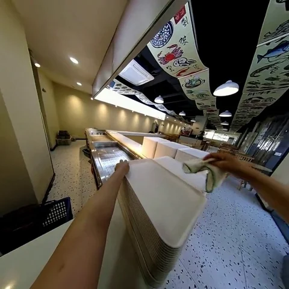
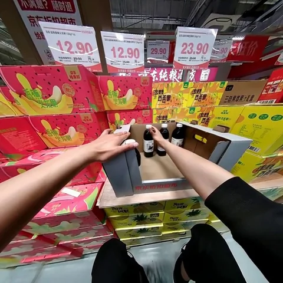
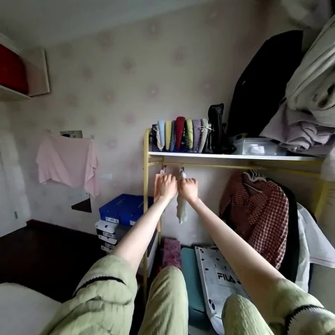
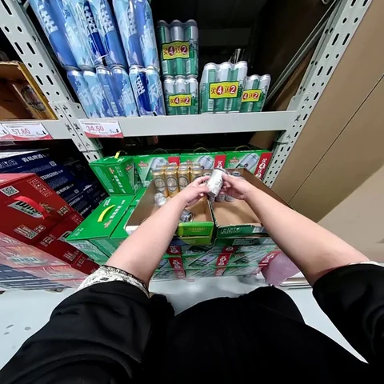
Learn from the broader Internal Ego-Centric Dataset.
Selected frames from the paper’s pretraining data figure. View the full figure & task prompts
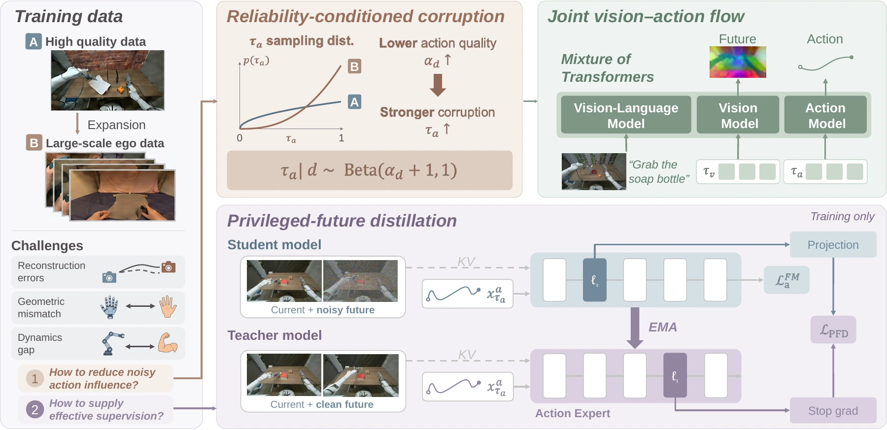
02 / In the real world
Galaxea R1 Pro · Sharpa Wave hands
58 degrees of freedom · 4× playback
Unscrew the lid, place it on the table, and return the bottle to the wooden block.
Lift the banana with the left hand, transfer it to the right, and release it into the white box.
Draw material from the left beaker, dispense it into the right, then place the syringe into the white box.
Selected rollouts · Videos encoded at 4× original speed · Task success measured over 20 trials per task, with 100 post-training demonstrations per task.
03 / A look ahead
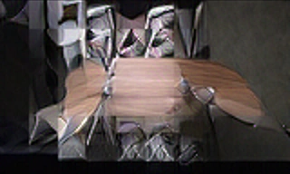
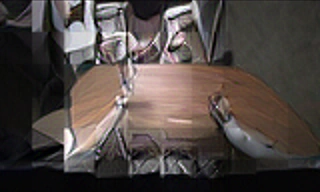
The model predicts DINO features, visualized here with a frozen RAE decoder. Prediction and reference use the same pooled grid, decoder, and crop. These are selected pretraining-source illustrations, not a held-out evaluation.
04 / What we find
Matched data. Matched optimization budgets.
Stronger returns across the tested scales.
The baseline disables reliability conditioning and privileged-future distillation. Data subsets and optimization budgets are identical at each scale; downstream adaptation is fixed. The MSE comparison uses the baseline’s best checkpoint. Lines connect measurements on a logarithmic hours axis.
RoboCasa averages across 24 dexterous manipulation tasks, evaluated over 50 episodes per task.
| Method | Few-shot100 demos / task | Full data1,000 demos / task |
|---|---|---|
| DIAL (robot-only) | 58.3 | 70.2 |
| DIAL + EgoDex | 61.1 | — |
| EgoForesight Ours | 66.0 | 73.9 |
Published baseline comparisons use different pretraining data and optimization budgets.
| Hours | Baseline MSE | Ours MSE | Baseline success | Ours success |
|---|---|---|---|---|
| 0 | 0.124 | 0.124 | 48.3% | 48.3% |
| 3,000 | 0.090 | 0.088 | 52.0% | 58.6% |
| 10,000 | 0.059 | 0.054 | 54.4% | 62.5% |
| 30,000 | 0.039 | 0.031 | 57.9% | 66.0% |
In the paper
Scaling policy learning requires broad experience and reliable supervision. Robot demonstrations provide high-quality trajectory supervision but are costly to collect. Egocentric videos broaden task and environment coverage, yet motion reconstruction and retargeting introduce noisy action labels. To address this challenge, we introduce EgoForesight, a vision-language-action framework that learns jointly from both sources by reducing the influence of unreliable action labels and exploiting demonstrated outcomes as complementary supervision.
A joint vision-action flow couples future visual representation prediction with action generation, unifying reliability-aware action learning with outcome-informed representation transfer. Specifically, reliability-conditioned corruption allocates action supervision across noise levels according to source reliability, while reliability-weighted regression regulates each source’s contribution. Complementing this treatment of noisy labels, privileged-future representation distillation draws supervision from demonstrated outcomes. An exponential-moving-average teacher observes the current scene and clean future to encode action-relevant structure from the resulting scene change. Its deeper representations supervise an earlier student layer receiving a corrupted future, providing outcome-informed structure beyond noisy action annotations.
Together, these mechanisms support effective scaling with noisy egocentric actions. Over the tested range, EgoForesight exhibits steeper scaling slopes than the baseline, reducing real-world open-loop action MSE by 20.5% and improving RoboCasa few-shot success by 8.1 percentage points at 30,000 hours of pretraining data. After post-training, it also achieves strong absolute performance in both simulated and real-world dexterous manipulation.
For your research
arXiv preprint · arXiv:2610.31845
@article{zhang2026egoforesight,
title={EgoForesight: Effectively Scaling Policy Learning with Noisy Egocentric Actions},
author={Zhang, Chubin and Wang, Changyuan and Wang, Yirui and Li, Ao and Ma, Shilin and Su, Yue and Zhou, Cai and Xu, Xiuwei and Zhang, Tianle and Tang, Yansong},
journal={arXiv preprint arXiv:2610.31845},
year={2026}
}